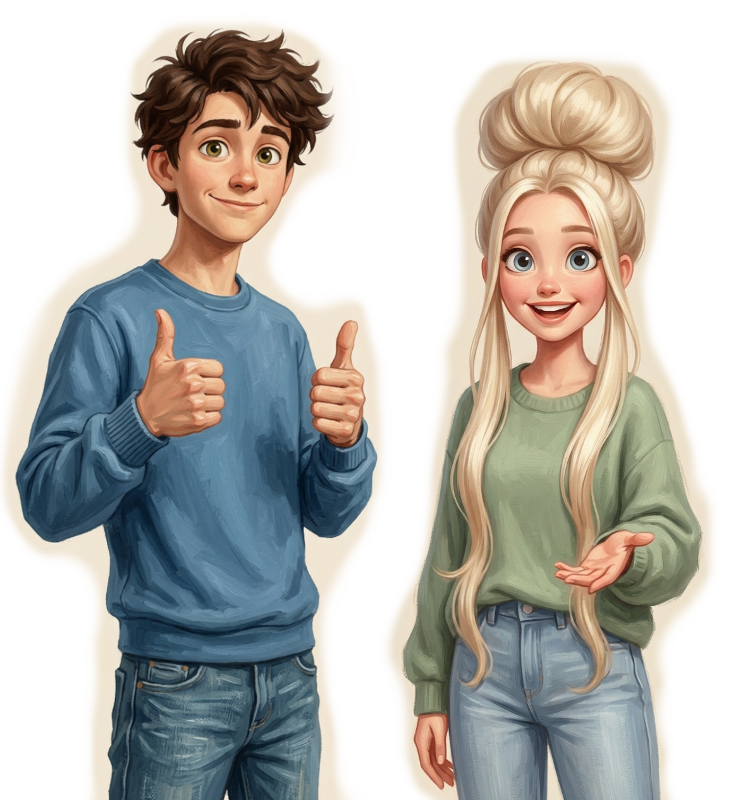

Accueil
Le cours

🎩 Tu as remarqué la casquette ?
Code : ta-d3p3ch3
— file dans Le charriot !
Commençons
Dans quelle langue veux-tu apprendre ?
Les langues grisées arrivent bientôt — reviens les essayer plus tard !
English
Español
Português
中文
Français
Deutsch
Italiano
日本語
한국어
العربية
Русский